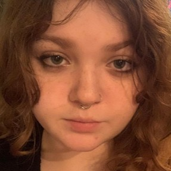

Giulia de Moura Carnevale
Olá, meu nome é Giulia de Moura Carnevale, tenho 19 anos e no momento estou cursando Sistemas para Internet (S.I) na Fatec Rubens Lara. Desde pequena sempre tive interesse na área de programação, e isso tem me levado a explorar mais afundo novas linguagens de programação. atualmente estou gostando muito de aprender sobre algumas linguagens de Front-end como HTML e CSS e estou sempre buscando novas formas de expandir meus conhecimentos no Back-end com a linguagem C#. Estou em busca de aprimorar minhas habilidades, seja por meio de projetos, pesquisas ou simplesmente trocando ideias com pessoas que compartilham dos mesmos interesses que eu. Além da vida acadêmica, adoro jogar jogos dos gêneros terror psicológico e "soulslike", ouvir musicas de todos os tipos, ler mangás e desenhar.